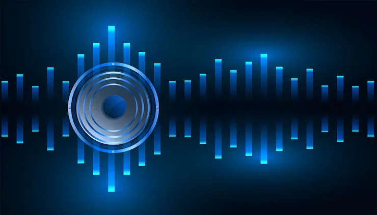

Dijital müzik, şarkıların fiziksel bir üründen internet üzerinden erişilen bir kataloğa dönüşmesinden ibaret değil. Dinleyici artık tek tek albüm satın almak yerine geniş bir arşivde arama yapabiliyor; sanatçılar ise müziğini dünyanın farklı yerlerine daha kolay ulaştırabiliyor. Buna karşılık, keşif ve gelir üzerindeki kararların önemli bir bölümü dijital platformların kurallarına bağlı.
Kasetten dosyaya, dosyadan akışa
Kaset, dinleyiciye müziği yanında taşıma ve kendi kayıtlarını hazırlama imkânı verdi. CD, dijital ses kaydını fiziksel bir albüm biçiminde yaygınlaştırdı. Daha sonra MP3 gibi sıkıştırılmış ses dosyaları, müzik arşivlerinin bilgisayarlara ve taşınabilir çalarlara taşınmasını kolaylaştırdı. Dosya paylaşım ağları müziğe erişimi hızlandırdı; aynı zamanda izinsiz kopyalama ve kayıt endüstrisinin gelir kaybı tartışmalarını büyüttü.
Abonelik temelli akış hizmetleri bu deneyimi başka bir modele taşıdı: dinleyici belirli bir ücret ya da reklam karşılığında bir kataloğa erişiyor, parça cihazına kalıcı olarak sahip olmadan çalınıyor. İnternet bağlantısı olmayan zamanlar için indirilen şarkılar da genellikle hizmetin uygulamasında çevrimdışı dinlenebiliyor; bu, satın alınmış ve bağımsızca kullanılabilen bir dosyayla aynı şey değil. Lisans anlaşmaları değiştiğinde kataloglar veya belirli kayıtlar hizmetten çıkabiliyor.
Albüm rafından kişisel akışa
Fiziksel albüm çoğu zaman sanatçının belirlediği bir sırayla, baştan sona dinlenmek üzere tasarlanır. Dijital kataloglar ise dinleyicinin tek bir parçayı arayıp çalmasını, listeler oluşturmasını ve farklı dönemlerden kayıtları bir araya getirmesini kolaylaştırdı. Bu esneklik, albümün önemini ortadan kaldırmadı; dinleme biçimlerine tek seçenek olmaktan çıkardı.
Arama, editoryal listeler ve kişiye göre hazırlanan öneriler yeni müzikleri bulmayı kolaylaştırabilir. Öte yandan bir parçanın hangi listede görüneceği, hangi dinleyiciye önerileceği ve hangi ölçütlerin öne çıkarılacağı platformların kararlarına bağlıdır. Öneriler yararlı bir başlangıç noktasıdır; fakat tek başına müzik zevkinin tarafsız bir haritası değildir. Arkadaş tavsiyesi, radyo, canlı konser ve bağımsız müzik yayınları da keşfin parçası olmaya devam ediyor.
Akış ekonomisi ve sanatçı payı
IFPI'nin 2026 raporuna göre 2025'te küresel kayıtlı müzik gelirleri 31,7 milyar ABD dolarına ulaştı. Akış gelirleri toplamın yüzde 69,6'sını, ücretli abonelik akışı ise yüzde 52,4'ünü oluşturdu. Aynı raporda plak gelirlerinin de büyüdüğü bildirildi. Bu rakamlar kayıtlı müzik pazarının genelini anlatır; bir sanatçının veya müzisyenin eline geçen tutarı doğrudan göstermez.
“Her dinlenme şu kadar kazandırır” biçiminde herkes için geçerli sabit bir ücret yoktur. Platformların açıkladığı modele göre gelir, dinlemelerin toplam içindeki payı ve pazardaki abonelik/reklam gelirleri gibi etkenlerle hak sahiplerine aktarılır. Ardından plak şirketi, dağıtımcı, yayıncı ve sanatçılar arasındaki sözleşmeler devreye girer. Bu nedenle toplam platform ödemeleri ile belirli bir sanatçının net kazancını birbirine eşitlemek yanıltıcıdır.
Spotify'ın Loud & Clear sayfası, şirketin kendi ödeme verilerini ve açıklamalarını sunar; bu nedenle platformun işleyişini anlatmak için yararlı bir birincil kaynaktır, ancak bağımsız bir değerlendirme değildir. ABD Kayıt Endüstrisi Birliği'nin (RIAA) raporundaki 2024 ABD gelirleri de yalnızca ABD pazarına aittir; küresel tabloyla karıştırılmamalıdır.
Fiziksel müzik neden geri dönüyor?
Dijital erişimin büyümesi fiziksel formatları tamamen ortadan kaldırmadı. IFPI, 2025'te küresel plak gelirlerinin yüzde 13,7 arttığını bildirdi. Plak ve kaset; koleksiyon, kapak tasarımı, nesneye sahip olma ve albümü bir bütün olarak dinleme gibi deneyimler sunuyor. Bazı dinleyiciler için akış hizmetleri gündelik erişim sağlarken fiziksel kayıtlar sanatçıyla ve müzikle daha somut bir bağ kurmanın yolu.
Sonuçta dönüşüm “eski formatlar bitti” şeklinde doğrusal değil. Aynı kişi günlük dinlemesinde akış kullanabilir, sevdiği albümü plak olarak alabilir ve bir konserle yeni sanatçılar keşfedebilir. Teknoloji müziğin etrafındaki seçenekleri artırırken, dinleme alışkanlıklarını da çeşitlendirdi.
Kaynaklar
- IFPI. Global Music Report 2026 ve 2025 kayıtlı müzik gelirlerine ilişkin özet. Küresel sektör verisi; bireysel sanatçı kazancı değildir. IFPI rapor özeti.
- Recording Industry Association of America (RIAA). 2024 Year-End Music Industry Revenue Report. ABD kayıtlı müzik pazarına ilişkin rapor. RIAA raporu.
- Spotify. Loud & Clear ve SSS. Platformun ödeme sistemine dair kendi açıklamaları; bağımsız denetim veya tüm platformlar için genellenebilir bir ücret tarifesi değildir. Loud & Clear; sık sorulan sorular.
Gelir karşılaştırmalarında pazar kapsamı ve raporu yayımlayan kuruluşun niteliği özellikle belirtilmiştir. Kaynaklar 8 Kasım 2026 tarihinde kontrol edildi.